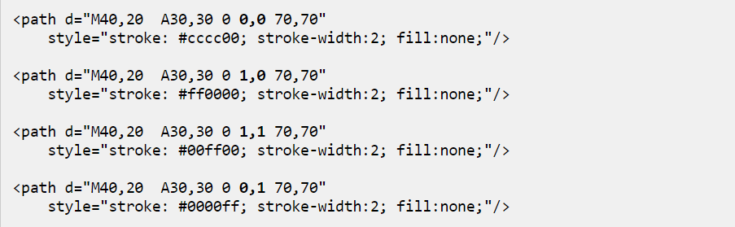
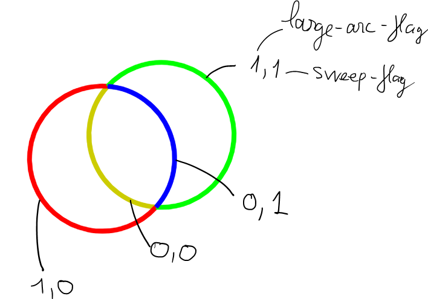

Step 1: create a new file. Paste the code svg into it
Example:
<svg xmlns="http://www.w3.org/2000/svg" xmlns:xlink="http://www.w3.org/1999/xlink">
<circle cx="64" cy="64" r="64" style="fill: #00ccff;"></circle>
</svg>
Step 2: save it as file.svg
Step 3: and use it like in a img tag. Which any height px
<img src="meo.svg" alt="" style="height: 40px;">
height 40px:
height 80px:
height 120px:
Nesting SVG Elements
<svg xmlns="http://www.w3.org/2000/svg" xmlns:xlink="http://www.w3.org/1999/xlink">
<svg>
</svg>
</svg>
The SVG <g> element is used to group SVG shapes together.
With transform: rotate(45 50 50)
Inherit: The Styling of g Elements are Inherited by Its Children, The third child element has a style attribute which sets the stroke and fill color, but it still inherits the stroke-width of the g tag element.
If you need to move all shapes within a g-element using x and y attributes you will need to nest the g-element inside an svg-element.
<svg x="100"<g transform="rotate(45 50 50)">
You can also switch the nesting,
<g transform="rotate(45 50 50)"><svg x="100"
original
tag svg x="100" before tag g transform="rotate(45 50 50)"
tag g transform="rotate(45 50 50)" before tag svg x="100"
The rx attribute determines how wide the rounding is, and the ry determines how high the rounding will be.
Same rx different ry
Rectangle Stroke
You can style the stroke (outline) of the rectangle using the SVG stroke style properties.
stroke-dasharray: 10 5;
Rectangle Fill
fill-opacity
The circle is centered in cx , cy and has a radius of r. cx, cy and r are attributes of the
The ellipse is centered in cx , cy like the circle. But the radius in the x and y directions are specified by two attributes, not one: The rx and ry attributes. As you can see, the rx attribute has a higher value than the ry attribute, making the ellipse wider than it is tall. Setting the rx and ry attributes the same number would result in a regular circle.
The SVG tag line element is used to draw lines inside of SVG images.
The line begins at the point set by the x1 and y1 attributes.
The line ends at the point set by the x2 and y2 attributes.
The multiple lines are identified by points. Each point is listed as x,y in the points attribute. This example had 3 points which defined a triangle.
The SVG tag polygon element is used to draw shapes with multiple (3 or more) sides / edges.
<polygon points="50,5 100,5 125,30 125,80 100,105
50,105 25,80 25, 30" style="stroke:#660000; fill:#cc3333; stroke-width: 3;" />
<path d="M50,50 A30,50 0 0,1 100,100" ></path>
rx: x-direction
ry: y-direction
x-axis-rotation: This sets the rotation of the arc's x-axis compared to the normal x-axis
large-arc-flag: determines whether to draw the smaller or bigger arc satisfying the start point, end point and rx and ry. The large-arc-flag determines whether the large or small arc is to be drawn.
sweep-flag: The sweep-flag determines whether the arc is mirrored around the axis going form start point to end point. Actually, the sweep-flag controls the direction the arc is drawn (clock-wise or counter-clock-wise) which results in a "mirroring" effect.
 The control point pulls the curve like a magnet.
Cubic Bezier Curves